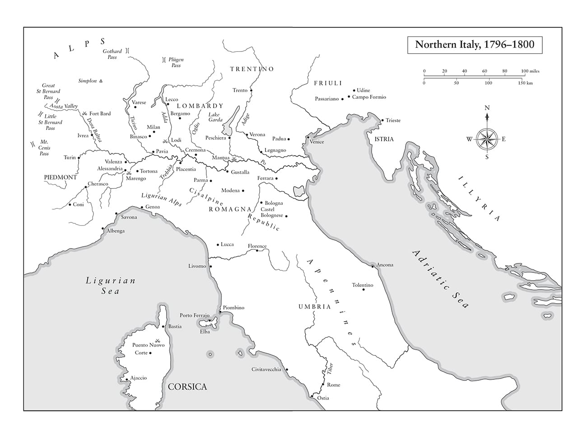
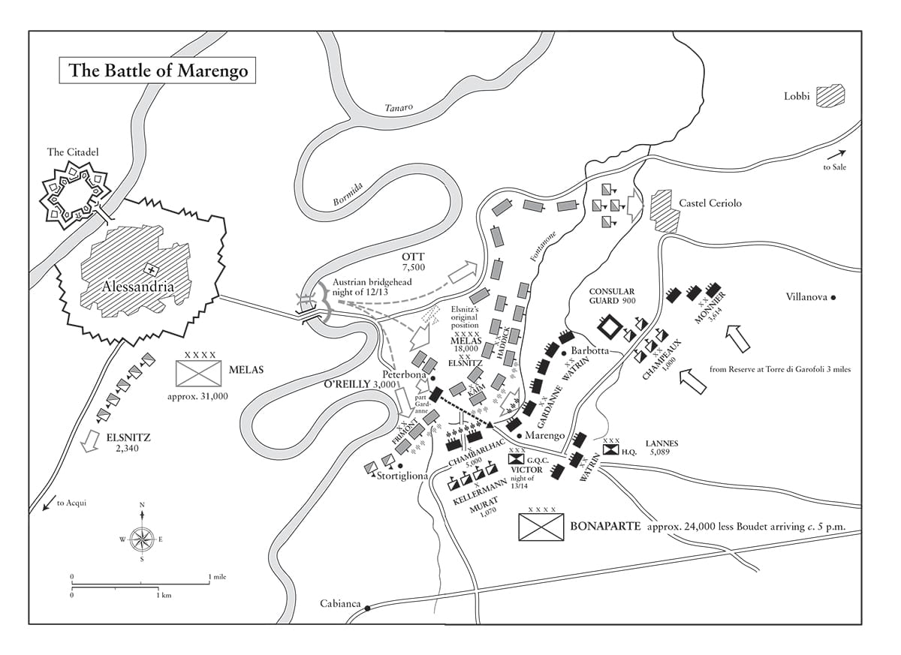

Chúng tôi đang vật lộn chống lại băng tuyết, bão tố và đất lở. Đèo St Bernard đang ném các chướng ngại vật ra trên đường chúng tôi đi, thật kinh ngạc khi thấy có nhiều người đến thế đang vượt qua nó.
• Napoleon viết cho Tổng tài Thứ hai và Thứ ba,
ngày 18 tháng Năm năm 1800
Caesar đã đúng khi viện đến vận may của mình và ra vẻ tin vào nó. Đó là một cách để tác động tới trí tưởng tượng của người khác mà không xúc phạm tới lòng tự tôn của bất cứ ai.
• Napoleon, Những cuộc chiến tranh của Caesar
⚝ ✽ ⚝
Napoleon bắt đầu chuẩn bị cho một cuộc tái chiến với Áo ngay từ khoảnh khắc ông trở thành Tổng tài Thứ nhất, nên đã gửi cho Berthier, người sẽ sớm trở lại là Tham mưu trưởng của ông, 28 bản ghi nhớ về chủ đề này trong sáu tuần tiếp theo đó. Ngày 7 tháng Một năm 1800, ông ra lệnh bí mật thành lập một Đạo quân Dự bị gồm 30.000 người đóng tại Dijon. Nhiều binh sĩ trong đó là các lính cựu đã biết về sự gian khổ của chiến tranh, những người khác được rút về từ các bán lữ đoàn đang đồn trú tại các tỉnh. Một số được điều động từ Vendée, song cũng có một số lượng lớn lính quân dịch sẽ học cách nạp đạn và bắn súng hỏa mai chỉ sau khi chiến dịch đã bắt đầu. Hệ thống “căng-tin” trong đó các nhóm gồm tám lính cựu và tám tân binh sẽ hành quân, ăn và cắm trại cùng nhau dưới quyền chỉ huy của một hạ sĩ, cho phép các tân binh học hỏi nhanh chóng về đời lính.
“Ông cần giữ bí mật triệt để về việc thành lập đạo quân này”, Napoleon lệnh cho Berthier ngày 25 tháng Một, “ngay cả với ban tham mưu của ông, ông không nên hỏi họ bất cứ điều gì vượt quá những thông tin tuyệt đối cần thiết”. Sự nghiêm ngặt trong việc giữ bí mật này có thể hình dung được từ thực tế là ngay cả Tướng Moreau cũng chỉ có thể phỏng đoán lực lượng được tập hợp thực sự là một đội quân dự bị, chứ không phải đạo quân Napoleon sắp sửa dẫn đầu vượt qua dãy Alps thuộc Italy để tấn công vào sườn phải sơ hở của Tướng Áo đã thất tuần Michael von Melas. (Napoleon được cập nhật về các động thái của quân Áo bởi các đơn vị Pháp đồn trú tại Italy, nhất là lực lượng đóng tại Genoa.) Bất chấp tuổi tác của mình, von Melas là một đối thủ đáng gờm, một phó tướng cao cấp của vị tư lệnh vĩ đại người Nga, Nguyên soái Alexander Suvorov, người không bao giờ thua trận, song đã qua đời ở St Petersburg ngày 18 tháng Năm.
Napoleon sẽ phải lựa chọn vượt Alps theo tuyến đường nào để vào miền Bắc Italy. Ông hẳn đã ưa thích những tuyến đường nằm xa nhất về phía đông – Splügen hay St Gothard – để ông có thể triển khai đòn tập hậu ưa thích của mình, song tốc độ tiến quân về phía tây của người Áo qua miền Bắc Italy hướng tới miền Nam Pháp buộc ông phải lựa chọn giữa đèo St Bernard Lớn cao gần 2.500 m và đèo St Bernard Nhỏ cao gần 2.200 m. Đèo St Bernard Nhỏ nằm quá xa về phía tây, vì thế Napoleon chỉ phái một sư đoàn theo lối này và quyết định chọn đèo St Bernard lớn cho chủ lực của đạo quân. Ông cũng phái một sư đoàn do Tướng Adrien Moncey chỉ huy đi theo đường đèo St Gothard.
Ông trông cậy vào một yếu tố bất ngờ: kể từ thời Charlemagne, và trước vị hoàng đế này là Hannibal, chưa từng có ai đưa một đạo quân vượt qua dãy Alps. Cho dù Napoleon sẽ không hành quân cùng những con voi, thì ông vẫn có những khẩu pháo Gribeauval bắn đạn nặng 8 livre và 4 livre với nòng súng nặng hơn một phần tư tấn cần được đưa qua dãy núi. Tuyết vẫn còn phủ dày trên mặt đất vào đầu tháng Năm, khi cuộc hành quân bắt đầu, vì thế Marmont chế ra những chiếc xe trượt làm từ thân cây khoét rỗng để vận chuyển các nòng pháo, sử dụng 100 người cùng lúc để kéo lên núi Alps rồi sau đó đưa xuống núi theo nhịp trống. (Vì sườn núi bên phía Italy dốc hơn nhiều so với phía Pháp, họ phát hiện ra rằng việc đưa xuống khó khăn hơn đưa lên.) Tiền và quân nhu được chuyển trước tới các tu viện và nhà trọ dọc đường, những người dẫn đường địa phương được thuê và buộc phải thề giữ bí mật. Napoleon, Berthier, và sau ngày 2 tháng Tư là Carnot – người đã được bổ nhiệm làm Bộ trưởng Chiến tranh khi Napoleon phái Berthier tới Đạo quân Dự bị – cùng nhau tổ chức mọi mặt của chiến dịch sẽ trở thành một trong những kỳ tích của lịch sử quân sự. “Một đạo quân luôn có thể đi qua, và vào bất kể mùa nào”, Napoleon nói với Tướng Dumas hoài nghi, “bất cứ nơi nào hai người có thể đặt chân.”
Ngày 17 tháng Ba, Napoleon chủ trì một cuộc họp các tổng tài mà ông vẫn thực hiện gần như hằng ngày vào giai đoạn đó, rồi một cuộc họp Hội đồng Nhà nước mà ông thực hiện cách vài ngày một lần, rồi một cuộc họp về chiến lược quân sự với người phụ trách đồ bản của mình là Tướng Bacler de l’Albe, quỳ gối xuống bên những tấm bản đồ Piedmont khổ lớn được trải trên sàn và cắm những cây ghim có đầu sáp màu đỏ và đen để chỉ ra vị trí của các đạo quân. (Đôi lúc, trong khi cùng bò trên sàn bên những tấm bản đồ, Napoleon và de l’Albe cụng đầu vào nhau.) Trong cuộc họp bàn chiến lược, ông được cho rằng đã hỏi Bourrienne xem ông này nghĩ trận quyết chiến sẽ diễn ra ở đâu. “Làm thế quái nào tôi biết được”, viên thư ký riêng của ông được đào tạo ở Brienne đáp. “Sao lại không, nhìn đây, đồ ngốc”, Napoleon nói, chỉ vào vùng đồng bằng sông Scrivia tại San Giuliano Vecchio, giải thích việc ông nghĩ Melas sẽ hành động ra sao một khi người Pháp đã vượt qua dãy Alps. Đúng là trận Marengo diễn ra tại đó ba tháng sau.
Ngày 19 tháng Tư, 24.000 quân dưới quyền Tướng Áo Karl von Ott vây hãm 12.000 quân của Masséna bên trong Genoa. Có rất ít lương thực trong thành phố đang bị Hải quân Hoàng gia Anh phong tỏa. Trung úy Marbot nhớ lại rằng trong những tuần tiếp theo đó, họ đã phải sống bằng một thứ “bánh mì” mà thực tế là “một hỗn hợp khủng khiếp gồm bột mì xấu, mạt cưa, hồ, bột rắc tóc, bột yến mạch, hạt lanh, các loại hạt đã có mùi ôi, và những thứ nguyên liệu ghê sợ khác, được thêm vào một chút kết dính tối thiểu nhờ ít cacao”. Tướng Thiébault ví thứ đồ ăn này với than bùn được trộn dầu. Cỏ, cây tầm ma và lá cây được luộc lên với muối, ăn tất cả chó mèo, và “chuột cống được bán với giá cao”. Dân thường và binh lính bắt đầu chết với con số lên tới hàng nghìn vì đói và những căn bệnh liên quan tới suy dinh dưỡng. Bất cứ khi nào có nhiều hơn bốn người Genoa tụ tập với nhau, quân Pháp đều được lệnh bắn vào họ vì sợ những người này có thể đầu hàng bán đứng thành phố cảng.
Napoleon đang nóng lòng muốn hành động, ông viết cho Berthier ngày 25 tháng Tư, “Cái ngày mà, hoặc vì những biến cố ở Italy hoặc vì những sự kiện trên sông Rhine, nếu ông nghĩ rằng sự hiện diện của tôi là cần thiết, tôi sẽ lên đường một tiếng sau khi nhận được thư của ông”. Nhằm làm dịu bớt hiện tượng đầu cơ và lo toan cho những vấn đề hậu cần lớn hơn của chiến dịch sắp tới, Napoleon ở tại Malmaison và Paris, duyệt những đơn vị được trang bị tồi nhất của mình trước sự chứng kiến của công chúng (và các gián điệp Áo), rồi tới nhà hát opera vào tối Thứ hai, ngày 5 tháng Năm. Toàn bộ nỗ lực chiến tranh dường như đều được dồn về phía chiến trường Đức, nơi Moreau có một lực lượng lớn hơn nhiều và đang đạt kết quả khả quan, vượt sông Rhine vào ngày 25 tháng Tư và nhận được những lời chúc mừng cá nhân nhiệt thành và gần như cung kính của Napoleon. Với những người không hiểu rõ thực tế của chính trị-quyền lực, điều này thậm chí còn có vẻ như Napoleon là Đại Tổng tài còn Moreau là Tổng tài phụ trách chiến tranh của ông.
Sau đó, Napoleon xuất kích. Rời Paris lúc 2 giờ sáng, chỉ vài tiếng sau khi vở opera kết thúc, ông có mặt ở Dijon sáng hôm sau, và tới 3 giờ sáng ngày 9 tháng Năm ông đã ở Geneva. Sau khi tới đó, ông tìm cách thu hút sự chú ý vào mình trong các cuộc diễu binh và duyệt binh, rồi loan tin rằng ông sẽ tới Basle, dù thực tế là tiền quân, sư đoàn của Tướng François Watrin, đã bắt đầu vượt đèo St Bernard Lớn, và nhanh chóng theo sau là các đơn vị dưới quyền chỉ huy của Lannes, Victor, và Tướng Philibert Duhesme. Napoleon giữ lại lực lượng Cận vệ Tổng tài của Bessières và kỵ binh của Murat bên mình. (Duhesme, người sở hữu một vườn nho, có gửi cho Napoleon một ít rượu vang, và nhận được hồi đáp: “Chúng ta uống để chúc mừng chiến thắng đầu tiên của ông”.)
Mùa đông năm đó rất khắc nghiệt, tuyến đường mòn – không có con đường nào qua đèo St Bernard cho tới tận năm 1905 – bị đóng băng và đọng tuyết dày hai bên, dẫu vậy Napoleon vẫn cực kỳ may mắn với thời tiết, vốn xấu hơn nhiều trước khi đạo quân bắt đầu vượt qua dãy Alps ngày 14 tháng Năm và sau khi họ đã hoàn tất nó 11 ngày sau đó (bằng nửa thời gian Hannibal đã đi). Chỉ có một trong số 40 khẩu pháo bị mất do tuyết lở. “Kể từ thời Charlemagne, con đường này chưa bao giờ chứng kiến một đạo quân lớn đến thế”, Napoleon viết cho Talleyrand ngày 18, “nó muốn trên hết chặn đứng đường vận chuyển các trang bị nặng cho chiến dịch của chúng ta, song cuối cùng một nửa pháo binh của chúng ta cũng có mặt ở Aosta”. Napoleon không dẫn đạo quân của mình qua dãy Alps, mà ông chỉ đi theo nó sau khi các vấn đề hậu cần quan trọng nhất – lương thực, đạn và la – đã được giải quyết. Ông liên tục duy trì sức ép lên các vị phụ trách cung ứng hậu cần, với những lời cảnh cáo như, “Chúng tôi có nguy cơ chết dần ở thung lũng Aosta, nơi chỉ có cỏ khô và rượu vang”. Bản thân ông vượt qua phần khó khăn nhất của cuộc hành trình, tại Saint-Pierre, vào ngày 20 tháng Năm, ở thời điểm Watrin và Lannes đã vào sâu 64 km trong nội địa Piedmont.

Tổng cộng có 51.400 người vượt dãy Alps cùng 10.000 ngựa và 750 la. Ở một số nơi họ phải đi thành hàng một, và hằng ngày phải khởi hành từ lúc rạng sáng để giảm bớt nguy cơ lở tuyết khi Mặt trời lên. Khi họ tới pháo đài Bard đáng gờm ở lối vào thung lũng Aosta, nơi có thể kiểm soát một hẻm núi hẹp phía trên cao sông Dora Baltea, 400 lính Hungary dưới quyền chỉ huy của Đại úy Joseph Bernkopf đã đứng vững trong 12 ngày, chặn đứng đường tiến của gần như toàn bộ đoàn khí tài nặng của Napoleon – đại bác, 36 xe chở đạn và 100 cỗ xe khác – khiến chúng bị tụt xa lại phía sau, làm gián đoạn nghiêm trọng chiến dịch. Một số xe tìm cách vượt qua được vào ban đêm, dùng phân súc vật và cỏ rải xuống nơi những bánh xe được bọc lăn qua nhằm triệt tiêu tiếng động, song phải tới khi các bức tường của pháo đài bị phá vỡ ở vài nơi và nó thất thủ vào ngày 2 tháng Sáu, với một nửa lực lượng của Bernkopf bị tiêu diệt, thì các xe khí tài còn lại mới có thể đi tiếp. Sự chậm trễ tại pháo đài Bard đồng nghĩa với việc Napoleon phải hành quân trong tình trạng thiếu trầm trọng pháo binh và đạn, nên đã lùng tìm khắp Lombardy và Tuscany để trưng thu bất cứ thứ gì có thể.
Kiểm soát kỳ vọng là một phần quan trọng trong nghệ thuật quản lý nhà nước của Napoleon, và ông biết tốt hơn là cho phép đồng bào của mình bị kích động sau khi ông rời khỏi Paris. Tức giận vì báo chí đang tung tin rằng ông dự đoán mình sẽ chiếm Milan trong vòng một tháng, ông đã viết vào ngày 19 tháng Năm, “Đó không phải là tính cách của tôi. Tôi thường xuyên không nói ra những gì mình biết, lại càng không bao giờ nói tới điều gì sẽ xảy ra”. Ông ra lệnh chèn “một tin vắn vui vẻ” về chủ đề này vào tờ Moniteur . Trên thực tế, đúng là ông đã có mặt ở Milan trong vòng một tháng sau khi rời Paris.
Napoleon cưỡi ngựa gần như trong toàn bộ cuộc hành trình qua dãy Alps, và cưỡi la (vì loài vật này đáng tin cậy hơn) trong những đoạn đường bị đóng băng trơn trượt nhất xung quanh Saint-Pierre. Ông mặc đồ dân sự bên dưới chiếc áo khoác ngoài màu xám quen thuộc của mình. Khi ông hỏi người dẫn dường của mình về điều anh ta muốn khi dẫn ông qua núi, ông được trả lời rằng, ở tuổi 22 tất cả những gì anh ta muốn là “niềm hạnh phúc của người sở hữu một ngôi nhà tốt, vài con bò, cừu, v.v”. những thứ anh ta cần để cưới cô bạn gái. Sau khi đã ra lệnh cấp cho anh ta 60.000 franc để mua tất cả những thứ đó, Napoleon phát hiện ra là anh chàng này đã 27 tuổi, đã có vợ và có nhà riêng, ông liền chỉ cấp cho anh ta 1.200 franc.
•••
Đến ngày 22 tháng Năm, Lannes đã chiếm Ivrea, và Piedmont nằm trước mặt đạo quân Pháp, song những báo cáo mà von Melas nhận được (người khi đó đã chiếm được Nice) vẫn nói rằng chỉ có 6.000 quân Pháp ở thung lũng Aosta. Khi cho phép Melas chiếm Nice, Napoleon đang kéo quân Áo ngày càng xa về phía tây trước khi tung ra đòn tấn công của mình. Đến ngày 24, ông đã có mặt tại Aosta cùng 33.000 quân và sư đoàn của Moncey với 12.500 quân đang trên đường đến. “Chúng ta đã tới đây nhanh như chớp”, Napoleon viết cho Joseph, người giờ đây đã trở thành một thành viên Cơ quan Lập pháp ở Paris, “kẻ thù không hề trông đợi điều gì như thế và khó lòng tin nổi nó. Những sự kiện lớn lao sắp sửa diễn ra.”
Chính vào giai đoạn này của chiến dịch mà sự tàn nhẫn đến cùng cực đã giúp Napoleon trở thành một vị tư lệnh đáng gờm đến thế một lần nữa lại bộc lộ. Thay vì tiến xuống phía nam giải vây cho Genoa đang chết đói, như binh lính và thậm chí cả các sĩ quan cao cấp của ông phỏng đoán ông sẽ làm, ông hướng về phía đông tới Milan để chiếm lấy kho tàng hậu cần lớn ở đó và cắt đứt đường rút lui của Melas về phía sông Mincio và Mantua. Ra lệnh cho Masséna chống giữ lâu nhất có thể để kìm chân lực lượng vây hãm của Ott, Napoleon đã qua mặt Melas, người nghĩ rằng đương nhiên Napoleon sẽ tìm cách giải vây cho Genoa. Do đó, ông ta đã rời khỏi Nice và hành quân từ Turin quay về Alessandria để cố gắng đi trước Napoleon.
Ngày 2 tháng Sáu, Melas ra lệnh cho Ott chấm dứt cuộc vây hãm Genoa để tập trung đạo quân của mình. Ott bỏ qua lệnh của ông ta, vì Masséna vừa yêu cầu được cho biết các điều kiện đầu hàng. Vào lúc 6:30 chiều cùng ngày, Napoleon tiến vào Milan qua cổng Verceil dưới trời mưa tầm tã và tới ở tại cung điện của đại công tước, thức tới 2 giờ sáng để đọc cho chép lại các lá thư, tiếp Francesco Melzi d’Eril người đã lãnh đạo Cộng hòa Cisalpine, thiết lập một chính quyền mới của thành phố, và thả các tù chính trị bị người Áo, vốn sử dụng Milan làm bản doanh vùng của mình, giam giữ. Ông cũng đọc những thư từ bị tịch thu gửi cho Melas từ Vienna, cho ông biết về lực lượng, cách bố trí, và tinh thần của quân địch. Moncey tới hợp quân với Napoleon cùng sư đoàn của mình, song chỉ với ít đại bác và đạn. Trong lúc đó, Lannes tiến vào Pavia, và cho dù cả 30 khẩu pháo ông ta chiếm được tại đó đều đã bị bịt nòng, nhưng ông ta đã tìm cách khôi phục hoạt động được cho năm khẩu. Napoleon thích thú khi bắt được một lá thư của Melas gửi cho nhân tình của ông ta tại Pavia, bảo cô không phải lo lắng, vì khó có chuyện một đạo quân Pháp xuất hiện ở Lombardy. Vào các ngày 11 và 16 tháng Năm, Napoleon viết thư cho Josephine, hỏi bà về “cậu em họ bé nhỏ” và báo cho bà biết tin về cậu con trai Eugène của bà. Đến ngày 29, ông lại viết thư nói rằng: “Anh hy vọng sau 10 ngày nữa sẽ ở trong vòng tay Josephine của anh, người luôn thật tốt khi không khóc lóc và không đỏng đảnh.”
Genoa đầu hàng ngày 4 tháng Sáu, vào thời điểm đó khoảng 30.000 trong số 160.000 cư dân của thành phố đã chết vì đói và các bệnh liên quan tới suy dinh dưỡng, khoảng 4.000 lính Pháp cũng chịu chung số phận. 4.000 người lính khác đủ khỏe để hành quân được phép trở về Pháp trong danh dự chiến tranh, và 4.000 người nữa bị ốm và bị thương được chuyển về Pháp trên các tàu Hải quân Hoàng gia Anh dưới quyền Đô đốc-Huân tước Keith, người đã phong tỏa hài cảng song nhận thấy lợi ích của việc sơ tán một lượng lớn quân Pháp khỏi chiến trường. Sức khỏe Masséna bị suy sụp, một phần do ông ta đã nhất quyết chỉ ăn những gì binh lính mình ăn. Ông ta không bao giờ tha thứ hoàn toàn cho Napoleon vì đã không giải cứu mình. Tương tự, Napoleon – người không bao giờ bị vây hãm trong toàn bộ binh nghiệp của mình – đã chỉ trích Masséna vì đã không đứng vững lâu thêm 10 ngày, ông nhớ lại việc này trong cảnh lưu đày trên đảo St Helena, “Một vài người già và dăm phụ nữ có thể đã chết đói, nhưng đáng lẽ ông ta không nên đầu hàng giao nộp Genoa. Nếu một người luôn nghĩ tới lòng nhân đạo – và chỉ lòng nhân đạo – người đó cần từ bỏ việc ra trận. Tôi không biết làm cách nào chiến tranh có thể được tiến hành với những kế hoạch thơm nức mùi nước hoa hồng”. Ông thậm chí còn chỉ trích Masséna trong hồi ký của mình, so sánh hành động của ông này với hành động của những người Gaul dưới quyền Vercingetorix khi bị Caesar vây hãm ở Alesia. Nếu quả thực Masséna cố gắng cầm cự được thêm 10 ngày, rất có thể Ott đã không tới kịp thời trên chiến trường ở Marengo.
Napoleon đang nhắm tới những mục tiêu lớn hơn nhiều so với một thành phố; ông muốn tiêu diệt hoặc bắt hết số quân Áo ở phía tây Milan. Chính việc Genoa đứng vững đã cho phép ông vòng ra sau lưng Melas, người lúc đó đã từ bỏ kế hoạch đánh chiếm Toulon phối hợp với Đô đốc Keith và tìm cách khôi phục được các tuyến đường liên lạc bị cắt đứt của mình. Piacenza và Valenza giờ đây là những điểm chính cuối cùng để vượt sông Po mà không nằm trong tay người Pháp, vì thế Melas phái một số cánh quân đi về phía cả hai thành phố này.
Tại Milan, Napoleon tra hỏi các gián điệp, kiểu như điệp viên hai mang (hay có thể là ba mang) Francesco Toli, về bố trí của quân Áo. Ngày 4 tháng Sáu, ông tới nhà hát La Scala, tại đây ông nhận được một tràng hoan hô nhiệt liệt, và tối hôm đó ông ngủ cùng cô ca sĩ ngôi sao của nhà hát này, Giuseppina Grassini 27 tuổi xinh đẹp, và Berthier bắt gặp ông cùng ăn sáng với cô này vào sáng hôm sau. “Anh không mời em tới đây”, Napoleon viết cho Josephine một cách lạnh nhạt trong lá thư kế tiếp. “Anh sẽ quay về sau một tháng nữa. Anh hy vọng sẽ gặp lại em khỏe mạnh”. Cùng ngày hôm đó, có lẽ là sau khi cô Grassini đã rời đi, 200 tu sĩ Thiên Chúa giáo tới cung điện để thảo luận về thần học. Napoleon yêu cầu họ cho phép ông “giúp các vị làm quen với những cảm xúc đã thúc đẩy tôi tới với Thiên Chúa giáo, tôn giáo của các tông đồ và La Mã”. Ông không nhắc gì tới quan điểm từng bày tỏ với diwan ở Cairo chưa đầy một năm trước, rằng “Không có Thượng đế nào khác ngoài Thượng đế; Mohammed là Đấng tiên tri của người”, mà thay vì thế bày tỏ rằng Thiên Chúa giáo “đặc biệt có ích cho các thiết chế cộng hòa. Bản thân tôi cũng là một triết gia, và tôi biết rằng trong bất cứ xã hội nào, không ai được coi là chính trực và đức hạnh mà lại không biết mình xuất phát từ đâu và sẽ đi về đâu. Lý trí đơn thuần không thể dẫn dắt anh ta trong vấn đề này; không có tôn giáo, người ta sẽ tiếp tục bước đi trong bóng tối”. Đức tin, với Napoleon, là một khái niệm mở, thậm chí là một khái niệm chiến lược. Khi ông nói rằng luôn đón nhận đức tin của bất cứ nơi nào mình đang chiến đấu tại đó, ông thực sự nghiêm túc, và ở Bắc Italy thì điều đó có nghĩa là Thiên Chúa giáo La Mã.
•••
Melas có ba con đường để tìm tới an toàn: qua Piacenza và men theo bờ nam sông Po, hướng tới Genoa rồi rút đi theo đường biển nhờ vào sự giúp đỡ của Hải quân Hoàng gia Anh, hoặc vượt sông Ticino tại Pavia. Trở lại chiến trường ngày 9 tháng Sáu, Napoleon tìm cách phong tỏa cả ba con đường, song khi làm thế ông buộc phải vi phạm nguyên tắc tiến hành chiến tranh số một của mình: tập trung lực lượng. Hôm đó Lannes đã đánh bại Ott giữa Montebello và Casteggio, buộc quân Áo phải rút lui về phía tây qua sông Scrivia tới Alessandria, nơi Ott hội quân cùng Melas. “Không hề phóng đại”, Napoleon nói với thành viên Hội đồng Nhà nước Claude Petiet ngày hôm sau, “1.500 quân địch đã bị giết, và có thể hình dung là số bị thương đông gấp đôi”. Tất nhiên, như thường lệ, ông đã phóng đại: có 659 quân Áo bị chết và 1.445 bị thương.
Qua ba ngày tiếp theo, Napoleon chờ đợi ở Stradella để quan sát ý định của Melas. Buổi tối ngày 11 tháng Sáu ông dùng để nói chuyện với Desaix, người từ Ai Cập vừa tới kịp để dự trận đánh sắp xảy ra, cho dù không có binh lính dưới quyền, sau khi tận dụng một khoảng đình chiến ngắn ngủi với người Anh được Ngài Sidney Smith ký nhưng không được Chính phủ Anh phê chuẩn, Tháng trước đó, Napoleon đã viết cho Desaix rằng mối quan hệ giữa họ là “một tình bạn mà trái tim tôi, vốn ngày nay đã rất chín chắn và hiểu thấu con người rất sâu sắc, đã không thể có được với người khác”. Ông lập tức giao cho Desaix chỉ huy một quân đoàn gồm các sư đoàn của Monnier và Boudet.
Lúc 10 giờ sáng ngày 13, Napoleon cưỡi ngựa tới San Giuliano Vecchio. Phía trước ông là những cánh đồng nằm kế bên làng Marengo, nằm cách Alessandria chừng 4 km về phía đông, gần hợp lưu của sông Tanaro và sông Bormida. Ba tuyến đường gặp nhau tại Marengo, bên kia là một cây cầu bắc qua sông Bormida để đi tới Alessandria; hai chỗ uốn cong của sông Bormida tạo thành một vị trí đầu cầu tự nhiên. Các ngôi làng Castel Ceriolo, Marengo và Spinetta nằm theo sông Bormida, và cách 6,5 km về phía đông là San Giuliano. Mặt đất giữa Bormida và Marengo bị gián đoạn bởi các ruộng nho, nhà thôn quê, trang trại, và một số đầm lầy, song vượt qua đây đồng bằng trở nên rộng rãi và bằng phẳng tới mức sử gia quân sự, Đại tá Henri de Jomini, người nhiều năm sau tham gia vào ban tham mưu của Napoleon, mô tả nơi đây như một trong số ít những nơi ở Italy mà một lực lượng lớn kỵ binh có thể phi nước đại. (Ngày nay các cánh đồng canh tác đã được chăm sóc kỹ hơn, song vào năm 1800 những cây trồng mọc cao hơn vẫn có thể che khuất tầm mắt.) Trong cơn mưa tầm tã ngày 13 tháng Sáu, đội kỵ binh nhỏ của Pháp (thường là 3.600) đã không thể trinh sát kỹ lưỡng khu đồng bằng rộng 224 km² mà chỉ đơn thuần đi cùng bộ binh hành quân về phía Tortona. Việc này sau đó sẽ được chứng tỏ là một sai lầm tai hại.
Một giờ sau khi tới San Giuliano, Napoleon được thông báo rằng Melas đang chuẩn bị hành quân tới Genoa. Có vẻ như ông ta đã hoàn toàn triệt thoái khỏi đồng bằng và đóng giữ Marengo để che chắn cho cuộc lui quân của mình. Napoleon để sư đoàn của Lapoype ở lại phía bắc sông Po với nhiệm vụ chiếm giữ điểm vượt sông tại Valenza, rồi cho phép Desaix lấy sư đoàn của Boudet và hành quân tới Novi để chặn đầu Melas. Victor, chỉ huy một quân đoàn làm tiền quân, được lệnh chiếm Marengo; vào lúc 5 giờ chiều, Tướng Gaspard Gardanne chạm trán với khoảng 3.000 quân Áo tại đó. Trong lúc Tướng Achille de Dampierre tiếp cận từ phía nam, Gardanne tấn công vào làng.

Một cơn mưa lớn trút xuống làm chậm cuộc tấn công một thời gian, làm đầy các con suối và dòng sông trước khi quân Pháp chiếm ngôi làng, thu được hai khẩu pháo và bắt được khoảng 100 tù binh. Cho dù đến 7 giờ tối quân Áo đã chặn được cuộc truy kích của quân Pháp nhờ pháo kích dữ dội từ bờ bên kia sông Bormida kéo dài tới tận 10 giờ tối, nhưng quân Pháp phỏng đoán rằng đối thủ không có ý định giao chiến vào hôm sau.
Không thấy có đống lửa trại nào, còn các toán tuần tra bộ binh và kỵ binh Pháp không báo cáo về bất cứ hoạt động bất thường nào, vì thế Napoleon không trông đợi cuộc phản kích quy mô lớn của Melas qua sông vào hôm sau. Tin tức tình báo thường chắp vá. Các toán kỵ binh tuần tra đếm quân số địch từ xa qua ống nhòm và thường trong hoàn cảnh bị đe dọa nên không thể cho kết quả chính xác, và trong trường hợp này còn có cả một con sông lớn trên đường. “Tổng tài, với đội kỵ binh cận vệ của ông”, Joseph Petit, một kỵ binh thủ pháo thuộc đội Cận vệ Tổng tài, nhớ lại, “đi quanh Marengo. Chúng tôi gần như lúc nào cũng thấy ông, cách chúng tôi một quãng, băng qua đồng bằng, chăm chú kiểm tra địa hình, thỉnh thoảng suy nghĩ rất trầm tư, rồi ra các mệnh lệnh.”
Napoleon thẩm vấn những kẻ đào ngũ, trong đó có một sĩ quan lưu vong mang huân chương chữ thập St Louis của nhà Bourbon “một cách rất nghiêm túc”, và như Petit nhớ lại, “Tất cả tù binh đều ngạc nhiên khi biết người họ vừa nói chuyện cùng chính là Bonaparte”. Thế nhưng, những gì được nghe đều không khiến ông trông đợi về sự bí mật quay trở lại của hậu quân Áo và hội với phần còn lại của đạo quân Áo, hay việc Melas đã quyết định sử dụng ưu thế số lượng của mình về kỵ binh và pháo binh so với Napoleon để tấn công tổng lực. Vậy là sáng Thứ bảy, ngày 14 tháng Sáu năm 1800, Napoleon chỉ có chừng 15.000 quân thuộc ba sư đoàn bộ binh và hai lữ đoàn kỵ binh trên chiến trường cho trận Marengo. Monnier và đội Cận vệ Tổng tài ở cách phía sau tới 12 km, quanh trang trại của Torre Garofoli, cách xa 4 km về phía đông của con đường chính chạy từ Santé Giuliano, nơi Napoleon đã qua đêm và ở đó ông đã quan sát địa hình từ tháp chuông nhà thờ St Agnes xây dựng từ thế kỷ 16 (hiện nay vẫn còn ở đó). Victor đang ở Marengo, song Desaix còn ở phía sau San Giuliano tới 8 km và đang hướng về Novi, còn Lapoype đang hành quân về phía bờ bắc sông Po.
Hai bờ sông Bormida rất dốc, song quân Áo đã chế tạo những cây cầu phao và lắp ráp vào vị trí trong đêm ngày 13, thiết lập các đầu cầu rồi ngủ mà không đốt lửa trại để đánh lạc hướng quân Pháp về vị trí và quân số của họ. Khi Mặt trời mọc lúc 4:30 sáng vào một ngày hứa hẹn rất nóng nực, 15.000 quân Pháp với chỉ 15 khẩu pháo đối mặt với 23.900 bộ binh, 5.200 kỵ binh và 92 khẩu pháo của quân Áo. Dẫu vậy, vào lúc tảng sáng, Victor đã không thể cảnh báo kịp thời cho Napoleon, ông chỉ nhận ra mức độ nghiêm trọng của tình hình khi pháo binh Áo khai hỏa lúc 9 giờ sáng, lúc những cọc rào trên chiến lũy của Gardanne bị đổ rạp ra sau. Nếu quân Pháp tấn công sớm và dữ dội lên đầu cầu thì đã có thể chặn được cuộc tiến quân của người Áo, song đến 9 giờ sáng điều đó là không thể. Nếu người Áo chỉ đơn giản là xông lên phía trước sau khi mỗi đơn vị vượt qua cầu thay vì lãng phí một tiếng để tập hợp đội hình nhằm xuất phát cùng nhau, thì rất có thể họ đã áp đảo được Victor. Một thất bại lớn tại Marengo có thể lật nhào chế độ Tổng tài, như Sieyès và những người khác đã ủ mưu ở Paris.
Murat ra lệnh cho lữ đoàn kỵ binh của François-Etienne Kellermann (con trai người chiến thắng tại Valmy) tiến lên từ San Giuliano, trong khi Berthier, người có tầm nhìn rất tốt từ một quả đồi nhỏ tại Cascina Buzana, ra lệnh cho Victor chống cự quyết liệt và đề nghị Napoleon mang quân từ Torre Garofoli tới nhanh nhất có thể. Đến 9:30 sáng, Gardanne đã nằm dưới làn pháo kích dữ dội, địa hình đồng bằng cứng và bằng phẳng này khiến đạn pháo nảy lên văng ra xung quanh rất nhiều, song vì người Pháp đánh trận này theo đội hình hàng ngang nên tổn thất của họ được giảm thiểu. Cuộc đấu hỏa lực diễn ra dữ dội trong hai tiếng, quân Pháp bắn liên tục thành từng loạt theo trung đội, song sáu tiểu đoàn của Gardanne bị pháo binh Áo pháo kích và buộc phải từ từ lùi về suối Fontanone, những bờ dốc của con suối này ngày nay có thể thấy rõ bên ngoài bảo tàng Marengo. Lực lượng nhỏ của Dampierre ở bên phải quân Áo, được che chở bởi các con mương và khe suối, chỉ bị khuất phục vào lúc 7 giờ khi ông ta đầu hàng sau khi đã bắn hết đạn và bị lực lượng khinh kỵ bao vây.
Vào 10 giờ sáng ngày 14 tháng Sáu, Napoleon đã lệnh cho Lannes tiến tới Cascina La Barbotta để che chắn sườn phải của Victor. Hát vang bài “Marseillaise”, Trung đoàn khinh binh 6 và Trung đoàn bộ binh 22 thực hiện những đợt xung phong đánh bật quân Áo trở lại qua suối Fontanone, lúc đó đang tràn nước từ những cơn mưa tối hôm trước. “Quân Áo chiến đấu như những con sư tử”, Victor sau này thừa nhận. Quân Pháp kiên quyết không từ bỏ chiến tuyến ở Fontanone khi quân Áo phản kích; binh lính tiểu tiện lên những nòng súng hỏa mai đã trở nên quá nóng khi cầm trên tay vì bắn liên tục. Đến trưa, chiến tuyến Pháp bị giã bởi 40 khẩu pháo cùng những loạt đạn hỏa mai bắn liên tục đến mức gần hết đạn. “Bonaparte ra trước trận tuyến”, Petit nhớ lại, “hô hào để cổ vũ và duy trì sĩ khí cho tất cả các đơn vị ông gặp; có thể thấy rõ là sự có mặt của ông đã giúp họ lấy lại tinh thần.”
Vào thời điểm này, Đại Công tước Áo Joseph, em trai Đại Công tước Charles, vượt qua suối Fontanone cùng lực lượng bộ binh của mình – hai bờ suối quá dốc cho kỵ binh hay pháo binh vượt qua. Quân Pháp không thể đánh bật được ông ta, và binh lính của ông ta bắt đầu bắc một cây cầu ván dưới sự yểm trợ của pháo binh bắn đạn chùm gây tổn thất nặng cho lữ đoàn Pháp được phái tới ngăn chặn họ. Đến 2 giờ chiều, Marengo thất thủ: quân Áo đã đưa 80 khẩu pháo vào tham chiến, suối Fontanone bị vượt qua ở nhiều chỗ, sư đoàn của Gardanne bị đánh tan và bỏ chạy khỏi chiến trường, cho dù trước đó đơn vị này đã đem đến cho Napoleon ba tiếng rưỡi rảnh tay để tổ chức cuộc phản kích của mình. Chỉ lữ đoàn kỵ binh của Kellermann, được cẩn thận rút từng chi đội một, là còn khiến người Áo e ngại và tung ra lực lượng kỵ binh có quân số áp đảo của họ. Khi người Áo triển khai thành đội hình tác chiến ở phía sau Marengo, Victor buộc phải rút lui gần như tới tận Santé Giuliano trước khi ông ta có thể tập hợp lại đội hình, được ông ta bố trí thành các khối vuông trên đồng bằng, chịu đựng tổn thất nặng từ một khẩu đội 15 pháo mà quân Áo đã đưa lên phía trước khá xa. Từ vị trí này, quân Áo chế giễu quân Pháp, treo mũ lông của những lính thủ pháo Pháp đã chết trên mũi kiếm và huơ lên.
Trong khi đó, Lannes bị đẩy vào thế phòng ngự khi bộ binh của Ott tiến lên, cánh phải của Lannes phải lùi lại, cạn kiệt đạn. Không có pháo binh, gần như bị bao vây, và bị pháo địch giã, Lannes ra lệnh rút lui qua đồng bằng với tốc độ dưới 1,6 km mỗi giờ, theo từng thê đội một cách trật tự nhưng là khoảnh khắc đắt giá trước mặt các khẩu pháo Áo. Napoleon, lúc này chỉ còn sư đoàn của Monnier và đội Cận vệ Tổng tài làm dự bị, cho truyền thông báo khẩn tới Desaix lúc 11 giờ trưa, lệnh quay lại gấp cùng sư đoàn của Boudet càng nhanh càng tốt. “Tôi đã nghĩ tới tấn công kẻ thù, song thay vì thế kẻ thù đã tấn công tôi”, thông báo của ông viết; “nhân danh Chúa, hãy quay lại nếu anh vẫn còn có thể!” Thật may cho vị thế tổng tài của Napoleon, Desaix đã bị trì hoãn nghiêm trọng bởi sông Scrivia dâng tràn bờ. Ông ta phái một liên lạc viên đưa tin hồi âm lúc 1 giờ chiều để báo với Napoleon đợi ông ta quay lại vào khoảng 5 giờ chiều. Ông ta và Boudet cần cho dừng sư đoàn lại, quay lại và hành quân trở về 8 km dưới cái nóng gay gắt hướng tới nơi có tiếng đại bác nổ, song họ đã về đến nơi vừa đúng lúc. Một thông báo tương tự của Napoleon gọi Lapoype quay trở lại từ nơi cách xa chiến trường hơn rất nhiều và đến tay ông này lúc 6 giờ chiều, khi đó đã quá muộn.
Khi Napoleon và Monnier tới chiến địa lúc 2 giờ chiều, tình hình không thể nghiêm trọng hơn, với quân Pháp từ từ rút lui ở trung tâm, bị tan vỡ ở bên cánh trái và bị đe dọa nghiêm trọng bên cánh phải. Napoleon biết mình cần phải phòng thủ con đường Tortona nhưng không thể làm vậy một cách trực diện, vì thế ông triển khai lực lượng dự bị của mình lệch sang phải. Có thể trông cậy vào Lannes để giữ vững chiến tuyến tại đó, nơi nếu cần thiết có thể được dùng làm một đường rút lui thay thế. Ott là rắc rối lớn nhất: ông ta chỉ bị kìm chân bởi 600 người. Để giúp Lannes rút khỏi vòng chiến, Monnier phái Tướng Claude Carra Saint-Cyr và 700 quân thuộc Trung đoàn khinh binh 19 tới Castel Ceriolo chỉ được phòng thủ thưa thớt, trong khi Trung đoàn bộ binh 70 di chuyển để tập hậu Ott, còn Trung đoàn bộ binh 72 được giữ làm dự bị. Thoạt đầu, Ott bị đẩy lùi về phía các đầm lầy gần sông Bormida, song ông ta giành lại ngôi làng sau một tiếng đấu hỏa lực với Saint-Cyr.
Do đó, rõ ràng đây không phải là thời điểm để Melas, người đã có hai con ngựa bị bắn chết lúc ông ta đang cưỡi chúng và bị thương nhẹ ở cánh tay, rời khỏi chiến trường quay về Alessandria, báo tin chiến thắng với Vienna và ra lệnh cho phó tướng của mình đảm nhận quyền chỉ huy, đánh chiếm San Giuliano và phái kỵ binh đi truy kích quân Pháp đang tháo chạy. Nhưng thật ngạc nhiên, đó lại chính là những gì ông ta đã làm.
Vào 3 giờ chiều, khi có thêm kỵ binh Áo tiến vào vùng đồng bằng để đe dọa bên sườn của Lannes, Napoleon quyết định cho 900 bộ binh thuộc Cận vệ Tổng tài tham chiến, họ được triển khai giữa La Poggi và Villanova thành hàng dọc, hát vang “Chúng ta sẽ chọc thủng sườn chúng”. Trung đoàn bộ binh 96 sau này nói rằng họ đã cứu vãn ngày hôm đó qua việc bỏ lại một phần đạn lúc họ hành quân. Khi một trong các trung đoàn long kỵ của Ott tấn công họ, họ tập hợp thành khối vuông, và đánh bật lực lượng này với sự giúp đỡ của các đội xung kích và bốn khẩu pháo cấp trung đoàn. Lực lượng Cận vệ sau đó bị bộ binh địch tấn công, và họ đọ súng với đối phương trong vòng 40 phút ở cự ly từ 45 đến 90 m; 260 người trong số họ bị chết ngày hôm đó, và khoảng từng ấy người bị thương. Họ đẩy lùi ba đợt xung phong của kỵ binh địch, nhưng khi bộ binh Áo giương lê và xung phong, họ buộc phải vừa đánh vừa lùi theo khối hình vuông về phía La Poggi. Sự hy sinh của lực lượng Cận vệ dù sao cũng đã giúp Monnier có thời gian cần thiết để hoàn tất cuộc di chuyển của mình, việc này đến lượt nó lại giúp cả đạo quân có thêm thời gian tái tập hợp. Napoleon sau này so sánh những người lính Cận vệ Tổng tài của mình hôm đó với “pháo đài bằng đá hoa cương”, và tặng thưởng 24 huy chương cho lực lượng bộ binh, 18 cho kỵ binh và 8 cho pháo binh.
Đến 4 giờ chiều, cả Cận vệ Tổng tài và sư đoàn của Monnier đều đang ở thế rút lui có trật tự trong lúc quân Áo tiến gần tới San Giuliano. Quân Pháp lùi lại rất trật tự, từng tiểu đoàn một, vừa lùi vừa chiến đấu. Đó là một thử thách cao độ về kỷ luật để không gục ngã trước cám dỗ phá vỡ đội hình trong hoàn cảnh lúc đó, và nó đã đem lại hiệu quả. Ngày hôm đó tiếp tục cực kỳ nóng bức, không có nước uống, rất ít yểm trợ pháo binh, và những đợt tấn công của kỵ binh Áo diễn ra liên tục, song một số đơn vị Pháp đã bình tĩnh rút lui từ 9:30 sáng tới 4 giờ chiều qua hơn 8 km đường, không bao giờ bị vỡ đội hình.
Napoleon bình thản đưa ra những lời cổ vũ và thực hiện việc chỉ huy “với sự bình tĩnh thường lệ của ông”, theo lời một cận vệ của ông kể lại, đảm bảo rằng lực lượng bộ binh, kỵ binh và các pháo đội ít ỏi của ông luôn hỗ trợ lẫn nhau. “Tổng tài dường như đang thách thức cái chết”, Petit nhớ lại, “và luôn ở gần nó, vì đã thấy hơn một lần những viên đạn cày đất dưới các vó ngựa của ông”. Hiện ông đã dùng hết toàn bộ lực lượng dự bị của mình, chỉ còn chưa đầy 6.000 bộ binh trải trên một chiến tuyến dài 8 km, với 1.000 kỵ binh và 6 khẩu pháo còn sử dụng được, và đạo quân của ông đã kiệt sức, khát cháy họng, còn rất ít đạn, một phần ba quân số đã bị loại khỏi vòng chiến, song ông xử sự như thể chiến thắng là chắc chắn. Thậm chí ông còn cố gắng tỏ ra vui vẻ, khi để ý thấy rằng con ngựa Marbot đang cưỡi bị thương nhẹ ở chân, ông “liền véo tai tôi, vừa cười vừa nói, ‘Cậu muốn tôi cho cậu mượn ngựa của tôi để cậu cư xử với chúng thế này hả?’”
Khi bộ binh Áo chuẩn bị tiến lên trong một khối dày đặc, Napoleon lệnh cho Berthier tổ chức một cuộc rút lui an toàn, trong khi ông tới biệt thự Gholina để tìm kiếm Desaix từ trên nóc nhà. Trông thấy bụi bay lên từ đoàn quân của Desaix, ông phi ngựa tới thúc giục họ khẩn trương hơn rồi nhanh chóng quay lại bãi bỏ lệnh rút lui đã phát ra với Berthier. Khi đạo quân nhìn thấy Desaix tới, cưỡi ngựa đi trước những binh lính đi bộ, tinh thần của họ lại được thổi bùng lên. Sau khi Boudet tới San Giuliano, và Lannes, Monnier cùng Watrin đã tập hợp được binh sĩ của họ thành một thế trận gần như một chiến tuyến, các cánh quân Áo liền dừng lại và bắt đầu triển khai thành hàng để thực hiện điều họ cho sẽ là cuộc tấn công chiến thắng cuối cùng. “Hôm nay chúng ta đã lùi lại đủ xa rồi”, Napoleon động viên binh lính của mình. “Hỡi các binh lính, hãy nhớ thói quen của tôi là cắm trại lại trên bãi chiến trường!”
Với sáu khẩu pháo còn sử dụng được trên chiến trường, cùng năm khẩu từ đội dự bị và tám khẩu từ sư đoàn của Boudet, giờ đây Marmont đã có một khẩu đội đáng kể để triển khai trên một triền đất hơi nhô cao. Boudet bố trí 4.850 bộ binh của mình thành đội hình hỗn hợp trên con đường chính, một phần được che khuất bởi các hàng rào và vườn nho. Napoleon cưỡi ngựa đi dọc theo chiến tuyến để cổ vũ binh lính; giờ đây ông có 11.000 bộ binh và 1.200 kỵ binh cho cuộc phản kích được mong chờ đã lâu của mình.
Khi quân Áo xung phong lúc 5 giờ chiều, các trung đoàn tại chính diện trung tâm của họ bị xé toang đội hình bởi đạn chùm bắn ra từ khẩu đội của Marmont. Cũng như tại Rivoli, một phát đạn may mắn đã bắn trúng một xe chở đạn làm nó nổ tung và gây ra hỗn loạn. Quân Áo luống cuống lui lại, và tác động của cú sốc hết sức nghiêm trọng, nhất là khi sư đoàn của Boudet tiến công họ. Những đợt xung phong quyết liệt của quân Áo nhanh chóng khiến Boudet rơi vào thế phòng thủ, nhưng đúng lúc gần 6.000 bộ binh Áo bắn một loạt đạn hỏa mai rồi giương lưỡi lê xung phong, Kellermann tung ra lực lượng kỵ binh của mình, vốn đã được vận động lên từ trước đó và được các dây leo trên các thân cây che kín. Kết quả là súng hỏa mai của quân Áo chưa kịp nạp đạn thì 400 kỵ binh thuộc các Trung đoàn kỵ binh 2 và 20 ập vào sườn trái cánh quân trung tâm của lực lượng thủ pháo Hungary. Trung đoàn kỵ binh 2 dùng kiếm chém ba tiểu đoàn, bắt 2.000 tù binh và khiến 4.000 quân địch còn lại tháo chạy. Ngay sau đó, Kellermann tung 200 kỵ binh được ém phía sau vào đợt xung phong cuối cùng, tấn công khoảng 2.000 kỵ binh Áo đang án binh bất động, và đánh bại luôn cả lực lượng này.
Quân Pháp sau đó tấn công trên toàn chiến tuyến. Đúng vào khoảnh khắc chiến thắng này, Desaix trúng đạn vào ngực và tử trận. “Tại sao tôi lại không được phép khóc chứ?” một Napoleon đầy đau buồn nói khi được báo tin, nhưng ông cần tập trung vào việc chỉ huy đợt tấn công tiếp theo. Những đợt công kích kế tiếp của Kellermann làm kỵ binh Áo quay lại lao thẳng vào bộ binh của chính họ, làm lực lượng này rối loạn hoàn toàn và cho phép Lannes, Monnier, và lực lượng Cận vệ Tổng tài có cơ hội hoàn tất chiến thắng bằng cách xung phong trên tất cả các chiến tuyến. “Số phận một trận đánh là kết quả của một khoảnh khắc duy nhất – một ý nghĩ”, Napoleon sau này nói về Marengo như thế. “Khoảnh khắc quyết định tới, một tia lửa tinh thần được thắp sáng, và lực lượng dự bị bé nhỏ nhất hoàn tất chiến thắng”. Quân Áo vốn chiến đấu dũng cảm cả ngày đơn giản đã bị suy sụp dưới cú sốc và đành phải chứng kiến chiến thắng bị đoạt lại từ tay họ, tháo chạy về Alessandria trong cảnh hỗn loạn.
Quân Pháp kiệt sức quả thực đã ngủ lại tối hôm đó trên bãi chiến trường. Tổng cộng có 963 lính Áo bị chết, 5.518 bị thương và 2.921 bị bắt, 13 khẩu pháo bị đoạt và 20 khẩu nữa bị ném xuống sông Bormida. Hơn 1.000 quân Pháp bị chết, 3.600 bị thương và 900 bị bắt hoặc mất tích, song các con số này đã làm lu mờ trận đánh mà trên thực tế là một thắng lợi chiến lược vĩ đại của Napoleon. Theo những điều khoản đình chiến mà Melas ký kết không lâu sau đó, Napoleon sẽ có được toàn bộ Piedmont, Genoa, phần lớn Lombardy, 12 pháo đài, 1.500 khẩu pháo, cùng lượng đạn và thuốc súng khổng lồ. Khi tin về trận Marengo tới Paris, các trái phiếu chính phủ vốn có giá 11 franc sáu tháng trước đó, và 29 franc ngay trước khi trận đánh diễn ra, đã tăng vợt lên 35 franc. Sau trận đánh, vào ngày 22 tháng Bảy, Napoleon lệnh cho Masséna “cướp phá và đốt trụi ngôi làng đầu tiên nổi loạn ở Piedmont”, và lệnh cho Brune vào ngày 4 tháng Mười một: “Tất cả người nước ngoài, nhưng đặc biệt là người Italy, thỉnh thoảng cần được đối xử một cách nghiêm khắc”. Nhưng giờ đây, khi quân Áo đã bị quét sạch lần thứ hai, Bắc Italy nhanh chóng bình yên trở lại với sự trấn áp tối thiểu, và tiếp tục yên tĩnh như vậy trong suốt 14 năm sau đó. Trận Marengo đã khẳng định vị trí Tổng tài Thứ nhất của Napoleon, và bổ sung cho huyền thoại bất khả chiến bại của ông.
•••
Napoleon đã phối hợp ba binh chủng bộ binh, pháo binh, và kỵ binh của mình với nhau một cách hoàn hảo tại Marengo, nhưng đó vẫn là một chiến thắng vô cùng may mắn, giành được chủ yếu từ hiệu ứng sốc khi Desaix xuất hiện trên chiến trường vào đúng thời điểm gây tác động tâm lý nhất, và những đợt xung phong bằng kỵ binh được tính toán thời điểm tuyệt vời của Kellermann. Quân Pháp đã giành lại trong một tiếng khu vực đồng bằng mà quân Áo đã mất tám tiếng để chiếm được. Những người lính quân dịch Pháp, được những lính cựu dẫn dắt, đã thực thi bổn phận của họ rất tốt.
Sau một trận đánh lớn”, Đại úy Blaze viết, “luôn có khá nhiều đồ ăn cho quạ và những kẻ viết thông cáo”. Napoleon đã phạm phải ba sai lầm lớn: khi tiến quân vào khu đồng bằng ở địa điểm đầu tiên, khi không lường trước cuộc tấn công của Melas, và khi phái Desaix đi xa như vậy. Song ông đã chiến thắng, và vì những lý do chính trị, Marengo phải được nhìn nhận như một chiến thắng của ông, hay ít nhất là một chiến thắng được chia sẻ với Desaix đã tử trận. Bản thông cáo sau trận đánh thuần túy chỉ là tuyên truyền, hàm ý rằng quân Áo đã rơi vào bẫy của ông. “Trận đánh có vẻ như đã thất bại”, bản thông cáo viết đầy hư cấu. “Kẻ thù được cho phép tiến tới tầm súng hỏa mai tại làng San Giuliano, nơi sư đoàn của Tướng Desaix đã dàn sẵn đội hình chiến đấu”. Napoleon cũng hư cấu ra vài lời cuối cùng của Desaix: “Hãy đi nói với Tổng tài thứ nhất rằng tôi chết với nuối tiếc vì đã không làm được đủ nhiều để lưu danh hậu thế”. (Trên thực tế ông ta đã chết ngay lập tức.) Lịch sử chính thức về trận đánh của Berthier đã phải qua ba lần chỉnh sửa trước khi Napoleon tán thành. Vào tháng Một năm 1815, Napoleon tỏ ra bất nhẫn khi tuyên bố rằng trận Marengo đã thắng từ trước khi Desaix tới nơi. Quan điểm của Anne-Jean-Marie-René Savary, sĩ quan phụ tá của Desaix, là “Nếu Tướng Desaix đến chậm một tiếng, chúng tôi hẳn đã bị đẩy xuống sông Po.
Ngày hôm sau trận đánh, Napoleon viết thư cho các tổng tài khác rằng ông “đang trong tâm trạng đau buồn sâu sắc nhất trước cái chết của người mà tôi yêu quý và tôn trọng nhất”. Ông đưa Savary và Jean Rapp – một sĩ quan phụ tá khác của Desaix – vào ban tham mưu của mình như dấu hiệu của sự trân trọng, và ông cho phép Trung đoàn khinh binh 9, đơn vị Desaix đang dẫn đầu khi bị giết, thêu lên quân kỳ của họ các từ “Vô song” bằng chỉ vàng. Ông cho ướp xác Desaix, cho đúc một huy chương tưởng niệm vị tướng, cũng như tổ chức một lễ tưởng niệm tại Marengo.(*) Tất cả những gì ông nói với Kellermann sau trận đánh là “Ông đã có một cuộc tấn công rất đẹp” khiến ông ta nổi xung, nhất là khi Napoleon tuôn ra với Bessières, “Kỵ binh Cận vệ đã đắm mình trong vinh quang hôm nay”. (Kellermann được cho là đã bực bội trả lời, “Tướng quân, tôi mừng vì ngài đã hài lòng, bởi nó đã đặt vương miện lên đầu ngài”, song việc liệu ông ta có thực sự nói vậy không thì rất đáng ngờ.) Khi nói riêng, Napoleon thừa nhận với Bourrienne rằng Kellermann đã “thực hiện một cuộc tấn công may mắn. Ông ta đã thực hiện nó đúng thời điểm. Chúng ta mắc nợ ông ta nhiều. Ông có thể thấy những bối cảnh nhỏ nhoi đã quyết định những chuyện này ra sao”. Kellermann được giao một sư đoàn riêng trong vòng một tháng, và sau này trong sự nghiệp của mình, Napoleon đã làm ngơ cho những hành động cướp bóc trắng trợn của ông ta. Có lẽ lời tóm tắt lại trận đánh hay nhất là câu ngắn gọn Napoleon nói với Brune và Dumas: “Các vị thấy đấy, trong cùng một ngày đã diễn ra hai trận đánh; tôi thua trận thứ nhất; tôi thắng trận thứ hai.”
•••
Ngày 16 tháng Sáu, Napoleon một lần nữa lại đề xuất hòa bình với Hoàng đế Francis, cũng trên cùng nguyên tắc như tại Campo Formio, ông viết: “Tôi kêu gọi bệ hạ hãy lắng nghe tiếng khóc than của nhân loại”. Trong Nhật lệnh của mình, ông tuyên bố là người Áo đã thừa nhận “rằng chúng ta đang đánh nhau chỉ để người Anh có thể bán đường và cà phê của họ với giá cao hơn”. Ngày hôm sau “Người Giải phóng Italy” đã trở lại Milan, tận hưởng sự quyến rũ của Giuseppina Grassini, người ông mời tới hát tại Paris vào lễ kỷ niệm Mười bốn tháng Bảy và tại tang lễ của Desaix. “Berthier báo với anh rằng ông ta đang tính đến việc đưa bà Billington hay bà Grassini tới”, ông viết có phần không thành thật cho Lucien ngày 21 tháng Sáu, “họ là hai ca sĩ nổi tiếng nhất tại Italy. Hãy cho soạn một vở kịch hay bằng tiếng Italy. Các nhà soạn nhạc Italy cần biết đến giọng ca của những nghệ sĩ này”. Grassini phàn nàn về “những cái vuốt ve qua loa” của Napoleon và thường khiến bà ta không thỏa mãn, và trong việc này thì bà ta không phải là người duy nhất. Ông không bao giờ dành nhiều thời gian cho chuyện làm tình của mình, có lần nói với một phụ tá, “Chuyện đó kết thúc trong ba phút.”
•••
Bên cạnh thiên tài quân sự, năng lực trí tuệ, khả năng quản lý, và sức làm việc cần mẫn của ông, cũng không thể đánh giá thấp phần vai trò may mắn đã đóng góp vào sự nghiệp của Napoleon. Tháng Năm năm 1800, thời tiết đã làm gián đoạn việc vượt dãy Alps, và trong tháng Sáu mưa đã làm chậm bước hành quân của Desaix nên chưa xa Marengo lắm, đủ cho ông ta có thể quay lại chiến trường đúng lúc để cứu nguy cho vị tư lệnh của mình. Năm 1792, báo cáo của Đại tá Maillard về các biến cố tại Ajaccio đã bị thất lạc trong hệ thống công văn giấy tờ tại Bộ Chiến tranh khi chiến tranh bùng nổ; năm 1793 nhát giáo đâm vào đùi ông tại Foulon đã không bị nhiễm trùng; năm 1797 xe chở đạn của Quasdanovich đã bị trúng đạn trực tiếp tại Rivoli, giống như xe đạn của Melas đã bị tại Marengo; năm 1799, tàu Muiron đã gặp được gió thuận khi rời Alexandria; cùng năm đó, Sieyès không lựa chọn được ai cho đảo chính Brumaire, còn báo cáo của Kléber về chiến dịch Ai Cập đã không về tới Paris trước cuộc đảo chính, và trong cuộc đảo chính đó ống tay áo của Thomé đã bị xé rách đủ để khiến đồng đội của anh ta phẫn nộ. Napoleon thừa nhận điều này, và hơn một lần nói tới “nữ thần May mắn”. Sau này trong sự nghiệp của mình, ông rồi sẽ tin rằng nữ thần đã ruồng bỏ mình, song hiện tại ông tin chắc nữ thần đang đứng về phía mình.